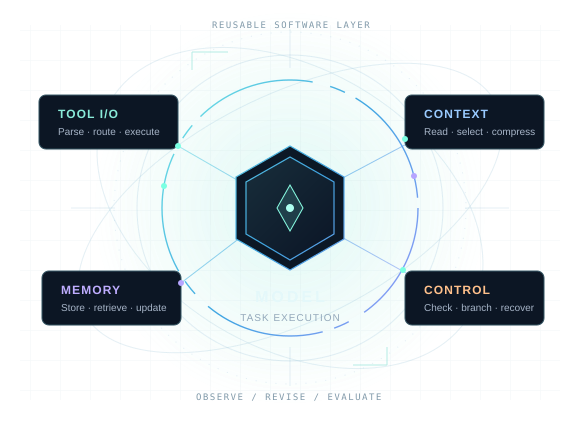

The survey
From Harness Optimization to Recursive Self-Improvement: A Survey of Language Model Agents.
arXiv link forthcomingTHE EVOLVING LAYER OF INTELLIGENCE
Same model.
A different way to work.
What happens when agents can revise the software around them? Explore a survey of harness evolution: concrete edits, observed outcomes, and the question of recursive self-improvement.

Preserve a multiline edit as a file payload instead of dispatching its contents to the shell.
Inspect the reported change ↗THE RESEARCH QUESTION
What changed in the harness? What did that change accomplish? Under which conditions might it be useful again?
An agent’s harness is the prompts, tools, memory and execution logic around its model. Our survey connects how the improvement workflow works, whether the improvement procedure itself changes, and what reusable mechanisms emerge across tasks.
A FEW CHANGES, UP CLOSE
Selected results from different studies and settings. Each card states what was measured; these are not head-to-head comparisons.
01 / INSIDE THE RESEARCH
A harness change persists beyond one answer. Follow a candidate from proposal to execution, evidence and reuse.
THE RECURSIVE QUESTION
A fixed improvement procedure searches for better task-agent harnesses.
A revised agent, improvement skill or search policy participates in generating later revisions.
Task gains alone do not establish better subsequent optimization or general RSI. Our survey examines reported configurations and their evidence separately. Related RSI framework ↗
02 / CROSS-DOMAIN DISCOVERIES
Three inferences from comparing concrete changes.
Select a lens to see what connects the domains.
These are cross-study comparisons, not a combined pipeline or demonstrated cross-domain transfer. Follow any cell to its evidence.
03 / THE EVOLUTION ATLAS
Four task domains. Concrete before-and-after changes.
Representative evidence and its limits, together.
Selected synthesis from the survey’s domain evidence. Each card compares reported reusable changes; it is not one shared implementation or one experiment.
04 / THE EVIDENCE NOTEBOOK
Explore what a harness can change, what was actually observed, and what the comparison supports. Every record keeps its original setting and source.
CURRENT VIEW
Open a record for the starting harness, exact change, observed result, retention status and primary-source location. Missing details stay visible.
Benchmark evidence could not be loaded. Download the data or refresh this page.
05 / LIVING COLLECTION
Publication trends and actual collection updates.
Explore cumulative growth or monthly activity.

| Month | Papers | Cumulative |
|---|
Counts cover the survey collection, including related methods, surveys, and benchmarks.
Publication months use first arXiv submission where available, otherwise bibliographic publication dates.
Loading collection history…
Collection statistics could not be loaded. Please refresh this page.
06 / BUILT TO KEEP EVOLVING
The paper captures a research snapshot.
This atlas is where the evidence keeps growing.
Suggest an addition or correction through the repository issue template ↗. Repository access is currently limited to collaborators.
Update details could not be loaded. Please refresh this page.
07 / HOW TO READ THE ATLAS
Useful comparisons need more than a headline score. Here is what the records do—and do not—tell you.
A reusable change to the prompts, interfaces, tools, context handling, skills or control logic around a target model. A one-off answer, generated image or task patch is not automatically a harness change. The records distinguish supplied mechanisms from modifications discovered during evolution.
The living bibliography includes surveys, benchmarks and adjacent methods. The frozen domain evidence is a narrower set: 95 category–source records from 62 research papers and one benchmark resource. A paper can contribute a record to more than one task category.
Read the evidence label. A full-system gain does not isolate one edit. An ablation tests the components actually removed; a paired case remains a case. A rejected or unused proposal is not presented as a final retained capability.
Use it as a design hypothesis. Compare the failure trigger, available observations and corrective actions. An analogy across domains is not an established transfer result; unchanged-harness transfer is identified separately when reported.
New studies are screened, concrete revisions are traced to primary sources, and comparisons are revised when the evidence changes. Dated release notes distinguish website changes, evidence updates and bibliography imports. The paper’s October 1, 2026 evidence snapshot remains identifiable.
08 / PROJECT
Read the evidence, reuse the data,
or suggest a paper or correction.
From Harness Optimization to Recursive Self-Improvement: A Survey of Language Model Agents.
arXiv link forthcomingCurated sources, classifications and publication-date provenance.
Download BibTeXSource code and supporting research material.
GitHub Currently private09 / THE TEAM
The survey and its living research companion.
The domain navigation could not be loaded. Please refresh this page.